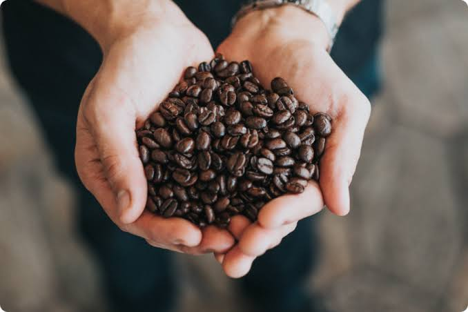

Potaxio Café nació de una idea simple: convertir una pausa cualquiera en un momento que vale la pena recordar. Seleccionamos cada grano pensando en las manos que van a sostener la taza y en las conversaciones que va a acompañar.
Somos un equipo pequeño, pero apasionado por el detalle: desde el tueste hasta la última gota de espuma.
"Cada grano cuenta una historia, cada taza continúa la nuestra."
Tres ideas simples guían todo lo que servimos.
Café de origen, tostado en pequeños lotes para conservar cada matiz de sabor.
Un espacio pensado para encuentros, ideas compartidas y conversaciones largas.
Empaques responsables y alianzas con productores que cuidan la tierra.
Porque no hay lugar más honesto para empezar el día. Una cafetería es donde el tiempo se detiene un momento, donde una taza caliente se convierte en excusa para respirar, conversar o simplemente estar. Elegimos este oficio porque creemos en las pequeñas pausas que sostienen los grandes días.